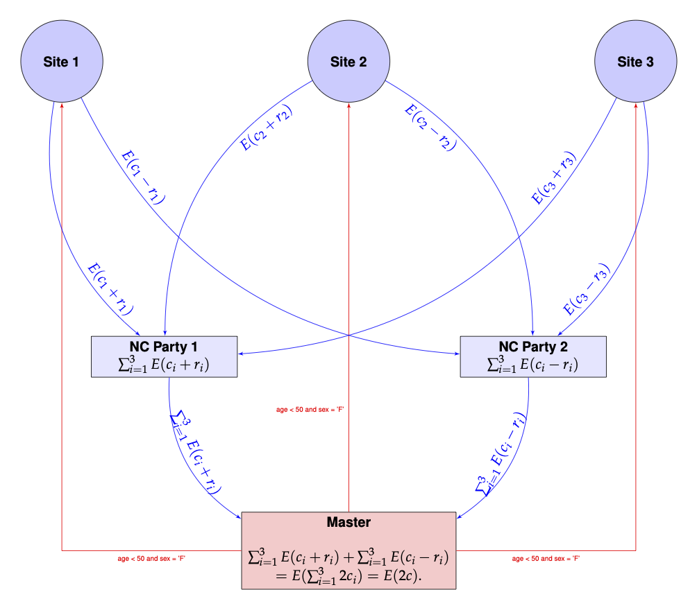
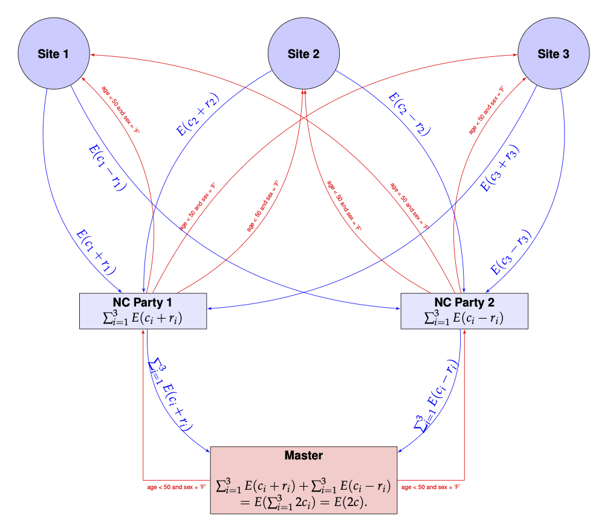

Distributed Query Count using Non-Cooperating Parties
Balasubramanian Narasimhan
2026-06-26
Source:vignettes/QueryNCP.Rmd
QueryNCP.RmdIntroduction
We demonstrate the use of non-cooperating parties to run a
distributed query count computation using the homomorpheR
package a simulated data set containing:
-
sex(F, M) for female/male -
agebetween 40 and 70 -
bma biomarker
set.seed(130)
sample_size <- c(60, 15, 25)
query_data <- local({
tmp <- c(0, cumsum(sample_size))
start <- tmp[1:3] + 1
end <- tmp[-1]
id_list <- Map(seq, from = start, to = end)
lapply(seq_along(sample_size),
function(i) {
id <- sprintf("P%4d", id_list[[i]])
sex <- sample(c("F", "M"), size = sample_size[i], replace = TRUE)
age <- sample(40:70, size = sample_size[i], replace = TRUE)
bm <- rnorm(sample_size[i])
data.frame(id = id, sex = sex, age = age, bm = bm, stringsAsFactors = FALSE)
})
})Site 1
str(query_data[[1]])## 'data.frame': 60 obs. of 4 variables:
## $ id : chr "P 1" "P 2" "P 3" "P 4" ...
## $ sex: chr "F" "F" "F" "M" ...
## $ age: int 43 67 66 59 63 52 55 46 43 60 ...
## $ bm : num 1.252 -1.01 0.551 -0.379 0.284 ...Site 2
str(query_data[[2]])## 'data.frame': 15 obs. of 4 variables:
## $ id : chr "P 61" "P 62" "P 63" "P 64" ...
## $ sex: chr "M" "F" "M" "F" ...
## $ age: int 53 64 45 61 55 65 65 51 53 47 ...
## $ bm : num 0.698 -0.447 -0.224 1.086 1.188 ...Site 3
str(query_data[[3]])## 'data.frame': 25 obs. of 4 variables:
## $ id : chr "P 76" "P 77" "P 78" "P 79" ...
## $ sex: chr "M" "M" "M" "M" ...
## $ age: int 69 70 41 63 42 57 43 55 68 46 ...
## $ bm : num -1.682 1.363 1.273 -0.68 0.625 ...Aggregated Query
If the data were all aggregated in one place, it would very simple to
query it. Let us run a sample query on this aggregated data set for the
condition
age < 50 & sex == 'F' & bm < 0.2
## [1] 11Distributed Computation
Assume now that the data query_data is distributed
between three sites none of whom want to share actual data among each
other or even with a master computation process. They wish to keep their
data secret but are willing, together, to provide the sum of the total
count. They wish to do this in a manner so that the master process is
unable to associate the contribution to the likelihood from each
site.
The overall query count for for the entire data is the sum of the counts at each site. How can this count be computed while preventing the master from knowing the individual contributions of each site?
We will use two non-cooperating parties, say NCP1 and NCP2, to accomplish this. These parties do not talk to each other, but do talk to the sites and the master process. Site sends to NCP1 and to NCP2, where is the actual count, denotes the encrypted value of and is a random quantity generated anew for each site. NCP1 can compute and NCP2 can compute , but individually, neither has a handle on .
The master process can retrieve and from NCP1 and NCP2 respectively. Each is an encrypted value of the sum of counts from all sites, obfuscated by random terms, and hence is random to the master. However, the master using the associative and homomorphic properties of , can compute:
since is the grant total count. The master can now decrypt the result and obtain !
This is pictorially shown below.

The red arrows show the master proposing a value to each of the sites, which reply back to NCP1 and NCP2. The master then retrieves the values from NCP1 and NCP2 and sums them.
A Modified Topology
The drawback of the above scheme is that channels of communication have to be established from each site to the master process and also to the two non-cooperating parties NCP1 and NCP2. If the number of participating sites in a computation changes, then both the master and NCP1 and NCP2 have to be made aware of the change.
It would be simpler if only NCP1 and NCP2 can talk to both the master and the sites. Such a situation would arise, for example, when the sites are all participating in a disease specific registry. The parties NCP1 and NCP2 would probably be set up once and any new site that has to be onboarded needs only to be known to P1 and P2. This has the added advantage of hiding the number of sites, which could even be 1!
Such a communication topology would mean that the values have be funneled to the sites through NCP1 and NCP2 and that can be easily accomplished. The picture below shows this configuration and looks more complicated than it actually is.

To summarize, the modified scheme has several characteristics:
- The master only communicates with NCP1 and NCP2
- NCP1 and NCP2 are the only parties communicating with both the master and sites
- NCP1 and NCP2 are the only ones that know how many sites are participating
- New sites can be added and only NCP1 and NCP2 need to account for them while the master remains oblivous to the number of sites; so the scheme works even with one site
- It appears that there is unnecessary communication of the same information, i.e. is being sent twice to each site from each of the NCP1 and NCP2. This is easily mitigated by engineering either by using a broker between NCP1 and NCP2, or the sites caching their results for a short period to avoid recomputation.
Implementation
The above implementation assumes that the encryption and decryption can happen with real numbers which is not the actual situation. Instead, we use rational approximations using a large denominator, , say. In the future, of course, we need to build an actual library is built with rigorous algorithms guaranteeing precision and overflow/undeflow detection. For now, this is just an ad hoc implementation.
Also, since we are only using homomorphic additive properties, a partial homomorphic scheme such as the Paillier Encryption system will be sufficient for our computations.
We define classes to encapsulate our sites, non-cooperating parties and a master process.
The Site Class
Our site class will compute the count on site data.
library(S7)
Site <- new_class("Site",
properties = list(
name = class_character,
data = class_any,
state = class_any
),
constructor = function(name, data) {
new_object(
S7_object(),
name = name,
data = data,
state = new.env(parent = emptyenv())
)
}
)
set_public_key <- new_generic("set_public_key", "obj")
set_filter_condition <- new_generic("set_filter_condition", "obj")
query_count <- new_generic("query_count", "obj")
method(set_public_key, Site) <- function(obj, pubkey) {
obj@state$pubkey <- pubkey; invisible(obj)
}
method(set_filter_condition, Site) <- function(obj, filter_condition) {
obj@state$filter_condition <- filter_condition; invisible(obj)
}
method(query_count, Site) <- function(obj, party) {
## Cache the split-and-encrypted local count under the site's
## current filter condition; both NCPs see the same site, but each
## gets a different additive share.
if (is.null(obj@state$result_cache)) {
pubkey <- obj@state$pubkey
offset_int <- random.bigz(nBits = 256)
filter_expr <- parse(text = obj@state$filter_condition)[[1]]
result_int <- nrow(obj@data[eval(filter_expr, obj@data, parent.frame()), ,
drop = FALSE])
obj@state$result_cache <- list(
int1 = encrypt(pubkey, result_int - offset_int),
int2 = encrypt(pubkey, result_int + offset_int)
)
}
if (party == 1) obj@state$result_cache$int1 else obj@state$result_cache$int2
}The Non-cooperating Parties Class
The non-cooperating parties can communicate with the sites. So they
have methods for adding sites, passing on public keys from the master
etc. The query_count method for this class merely calls
each site to compute the result and adds them up before sending it on to
the master, so that the master has no idea of the individual
contributions.
NCParty <- new_class("NCParty",
properties = list(
name = class_character,
number = class_integer,
state = class_any
),
constructor = function(name, number) {
new_object(
S7_object(),
name = name,
number = as.integer(number),
state = new.env(parent = emptyenv())
)
}
)
add_site <- new_generic("add_site", "ncp")
method(set_public_key, NCParty) <- function(obj, pubkey) {
obj@state$pubkey <- pubkey
for (s in obj@state$sites %||% list()) set_public_key(s, pubkey)
invisible(obj)
}
method(set_filter_condition, NCParty) <- function(obj, filter_condition) {
obj@state$filter_condition <- filter_condition
for (s in obj@state$sites %||% list()) set_filter_condition(s, filter_condition)
invisible(obj)
}
method(add_site, NCParty) <- function(ncp, site) {
ncp@state$sites <- c(ncp@state$sites %||% list(), list(site))
invisible(ncp)
}
method(query_count, NCParty) <- function(obj) {
pubkey <- obj@state$pubkey
sites <- obj@state$sites
results <- lapply(sites, query_count, party = obj@number)
Reduce(`+`, results, init = encrypt(pubkey, 0L))
}
`%||%` <- function(a, b) if (is.null(a)) b else aThe Master Class
The master process generates the keys, broadcasts the public key through both non-cooperating parties to all sites, and decrypts the combined result.
Master <- new_class("Master",
properties = list(
name = class_character,
filter_condition = class_character,
state = class_any
),
constructor = function(name, filter_condition) {
new_object(
S7_object(),
name = name,
filter_condition = filter_condition,
state = new.env(parent = emptyenv())
)
}
)
set_ncparty_1 <- new_generic("set_ncparty_1", "master")
set_ncparty_2 <- new_generic("set_ncparty_2", "master")
method(set_ncparty_1, Master) <- function(master, ncp) {
master@state$nc_party_1 <- ncp
set_public_key(ncp, master@state$keys@pubkey)
set_filter_condition(ncp, master@filter_condition)
invisible(master)
}
method(set_ncparty_2, Master) <- function(master, ncp) {
master@state$nc_party_2 <- ncp
set_public_key(ncp, master@state$keys@pubkey)
set_filter_condition(ncp, master@filter_condition)
invisible(master)
}
method(query_count, Master) <- function(obj) {
if (is.null(obj@state$keys))
obj@state$keys <- paillier_keypair(1024)
privkey <- get_private_key(obj@state$keys)
result1 <- query_count(obj@state$nc_party_1)
result2 <- query_count(obj@state$nc_party_2)
enc_sum <- result1 + result2
final <- as.integer(decrypt(privkey, enc_sum))
final / 2
}Example
We are now ready to use our sites in the computation.
3. Create the master process
master <- Master(name = "Master",
filter_condition = "age < 50 & sex == 'F' & bm < 0.2")
master@state$keys <- paillier_keypair(1024)We next connect the master to the non-cooperating parties.
set_ncparty_1(master, ncp1)
set_ncparty_2(master, ncp2)At this point the communication graph has been defined between the master and non-cooperating parties and the non-cooperating parties and the sites.